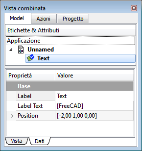
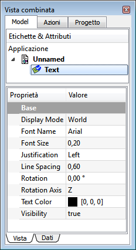

|
| Posizione nel menu |
|---|
| Draft → Testo |
| Ambiente |
| Draft, Architettura |
| Avvio veloce |
| T E |
| Vedere anche |
| Nessuno |
Inserisce un blocco di testo in un determinato punto del documento corrente. Il testo assume il tipo di linea e il colore impostati in precedenza nella Barra dei comandi e modificabili tramite la stessa o nella scheda Vista combinata → Proprietà → Vista.

Utilizzo
- Premere il pulsante
 Testo, o premere i tasti T e E
Testo, o premere i tasti T e E - Selezionare un punto nella vista 3D, per definire un punto base, oppure digitare le sue coordinate
- Inserire il testo desiderato, premendo INVIO per andare a capo
- Premere due volte INVIO (lasciando l'ultima riga vuota) per aggiungere il testo al documento e terminare l'operazione.
Opzioni
- Premere CTRL mentre si disegna per ancorare il proprio punto al punto agganciabile più vicino, indipendentemente dalla distanza.
- Per inserire manualmente le coordinate, è sufficiente inserire il loro valore, poi premere INVIO per ogni componente X, Y e Z. È bene tenere il puntatore del mouse fuori dall'area di lavoro in quanto un suo movimento accidentale cattura e inserisce nel campo di input le coordinate a cui si trova e costringe a ripetere l'inserimento.
- Premere ESC per uscire dal comando attivo.
- Quando si edita il testo, la pressione su INVIO o su Freccia Giù consente di editare una nuova riga di testo.
- Premere Freccia Sù per editare una linea di testo precedente.
- Preme due volte INVIO (lasciando l'ultima riga vuota) per aggiungere il testo al documento e chiudere l'editor.
- Diversi parametri, come ad esempio, il tipo di carattere e la sua dimensione, possono essere modificati nelle proprietà dell'oggetto, mentre le impostazioni di default possono essere definite nelle preferenze.
Proprietà
Dati
|  |
Base
|
{kind=link}
Vista
|  |
Base
|
{kind=link}
Script
Lo strumento Testo può essere utilizzato nelle macro e dalla console di Python utilizzando la seguente funzione:
makeText (string or list, [Vector], [screenmode])
- Crea un oggetto di testo, nel punto dato, se viene fornito un vettore, che contiene la stringa o le stringhe riportate nell'elenco, una stringa per riga.
- Il testo assume il colore, l'altezza e il tipo di carattere impostati in precedenza nella Barra dei comandi.
- Se screenmode è True, il testo è sempre rivolto nella direzione della vista, altrimenti si trova sul piano XY.
- Restituisce l'oggetto appena creato.
Esempio:
import FreeCAD,Draft
Draft.makeText("This is a sample text",FreeCAD.Vector(1,1,0))